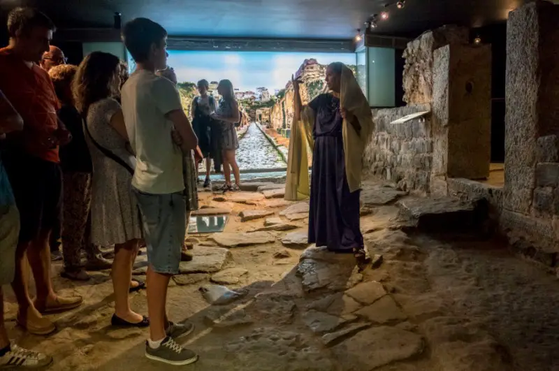

Descripcion
Después de aparcar en el centro de la ciudad puedes empezar una ruta por Cartagena en la Plaza de la Merced, en la que puedes varios restos arqueológicos como el Decumano Máximo, la antigua calzada romana de entrada a la ciudad. A pocos metros de esta plaza se encuentra la Casa de la Fortuna, una domus romana del siglo I a.C. situada en los sótanos de una edificio moderno que es otro de los lugares que ver en Cartagena más bonitos. Durante la visita al interior de esta casa, que recibe su nombre por la inscripción Fortuna propitia (buena suerte), que se encuentra en un mosaico del suelo, recorrerás diferentes habitaciones decoradas con objetos originales como la vajilla doméstica y disfrutarás de la belleza de sus pinturas murales y mosaicos. Puedes reservar la entrada desde esta página. Para conocer mejor la historia de este lugar y otros de la ciudad te aconsejamos reservar este free tour por Cartagena ¡Gratis! y este tour de misterios y leyendas ambos considerados como dos de los mejores free tours en Cartagena.
